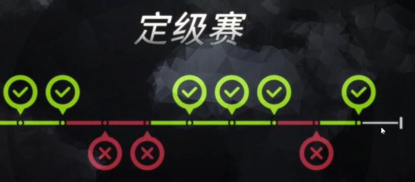
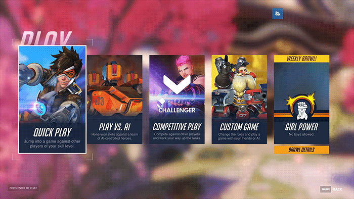
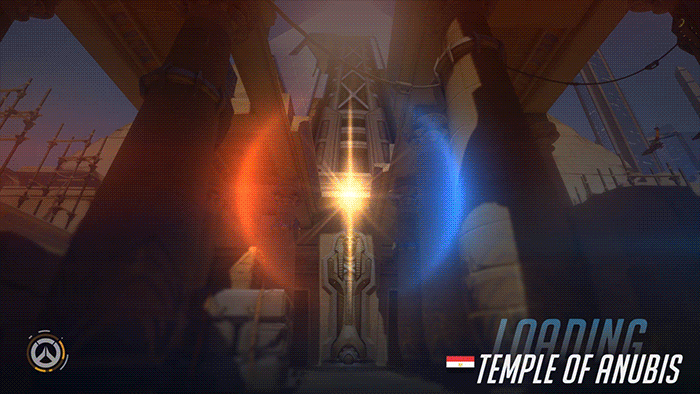

竞技模式机制
守望先锋天梯排位赛等级是只有达到25级的玩家才可以进入竞技比赛。升到25级并不是一个漫长的过程，并且我们也觉得当玩家达到25级后，应该已经十分了解游戏本身、地图、英雄以及核心概念了
要加入竞技比赛，你需要在主菜单点击“开始”按钮随后点击“竞技比赛”。你可以单人排队匹配也可以以任意人数组队排队匹配。开始匹配后，系统会尽可能为你匹配到和你一样单独匹配的玩家，或队伍人数相似的其他队伍。
比赛模式
当你开始匹配竞技比赛后，系统会开始根据一系列条件为你搜索一场比赛，这些条件包括你的阶位和级别(下面会详细说明)。当搜索到两支队伍后，系统会随机选择一张地图并开始比赛。
阶位和级别
为玩家提供升级体验是任何一款带有竞技性质游戏的关键部分——在《守望先锋》的竞技比赛中，玩家可以通过阶位和级别系统来升级。
在竞技比赛中，分为4种不同的级别：新手、高手、专家和大师。每个级别又分别设有5个阶位，从一阶到五阶。新手一阶是最低的级别和阶位(所有玩家都会从这一级别开始)而大师五阶则是最高的级别和阶位。想要升级的话，你需要获得一定数量的点数。你会在赢得竞技比赛后获得点数，或者根据你所在级别的不同，在战败后失去点数。获得和失去的点数数量取决于不同的级别和特定的胜利/失败条件。